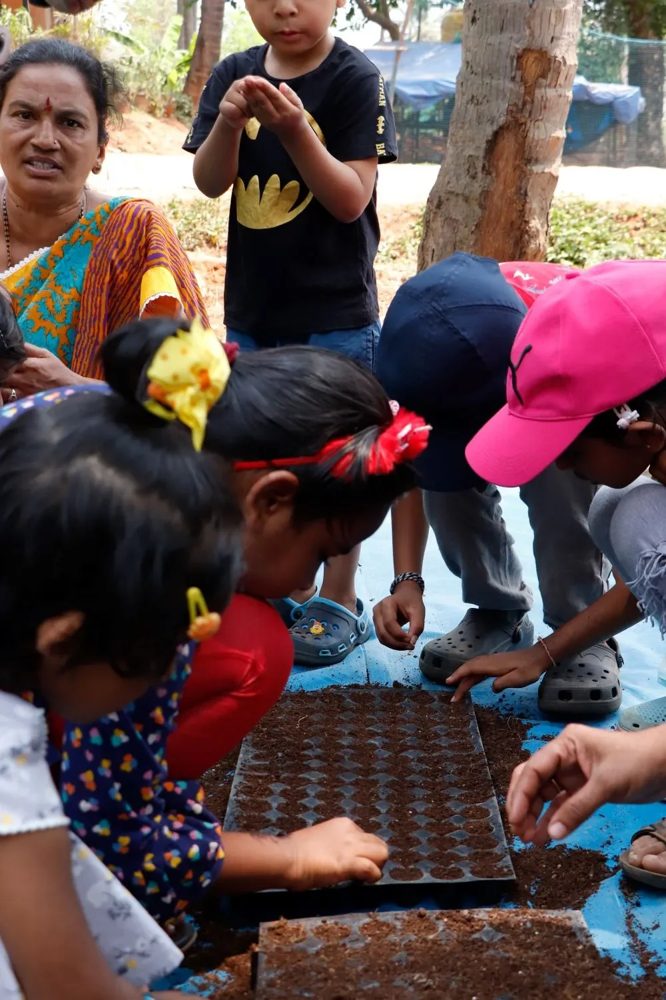
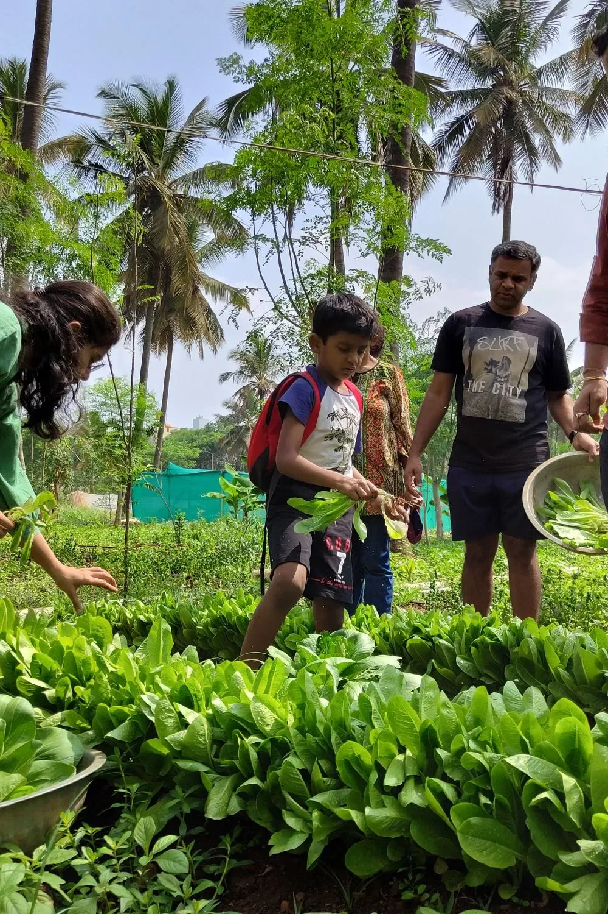

Sustainability
Sustainability
Once the monsoon abates, urbanites across Indian metros prepare themselves for tough times ahead: bonfires and firecrackers, burning farm residue, and unbreathable winter air laden with particulate matter. The truth is, we forget that there is another way to prepare for winter - by adding to our green infrastructure, along with mindful human activities of course. It's something we vouch for at Malhar, and our faith has been borne out by what we have tried out and perfected over the years.
Crafting green spaces for enhanced air quality
It's already well proven that plants and trees help reduce particulate matter in the atmosphere, offering city dwellers much needed respite from vehicular emissions and fine dust arising from traffic and construction activities.
At Malhar, we planned green spaces keeping in mind the specific ways in which plants interact with atmospheric dust and particulate matter. For instance, we ensured that areas with high traffic were planted with hardy trees that could withstand the high levels of particulate matter and ozone typical of vehicular emissions and purify the air in spite of this heavy load. The more pristine spaces within Malhar, on the other hand, are dedicated to the more delicate fauna such as fruit trees and the like.
Promoting a car-free community
While driveways are an essential part of Malhar, ensuring easy access across the length and breadth of a large development, we believe that not all places need to be accessible by car.
In designing the micro-neighbourhoods within Malhar, we did away with driveways that come all the way to the houses. Instead, the spaces in Footprints and Medley have a pedestrian-only central square which enables opportunities for safe, accident-free socializing and also reduces vehicular pollution near homes. Some other units have an interconnected basement level parking to ensure vehicular movement takes place smoothly without impacting the lung space of the residents.
Moreover, garage spaces across Malhar are all set for the impending EV revolution with charging stations. The Malharite community also does its best to keep their vehicular activities as lung-friendly as possible through carpooling initiatives.
Mindful construction activities
As far as possible, we adopt low-machinery and skill-intensive construction methods to reduce the fumes generated from running heavy construction machinery for long periods of time on site. We also use dust nets and monitor dust levels to ensure the air around the construction site is safe and breathable for workers as well as residents.
Efficient waste management
Together with the Malharites, we have adopted practices to ensure waste collection and disposal is done responsibly at Malhar. By segregating and recycling waste, and composting organic waste, we can reduce the amount of garbage reaching landfills or incinerators which contribute significantly to the release of particulate matter and greenhouse gasses into the atmosphere. This is a serious issue, with studies suggesting that open waste burning is set to become the biggest source of air pollution in India by 2035.
Community involvement & education
These efforts are just one part of our determined action plan to combat air pollution. Our efforts to promote awareness comprise the other prong. Our residents are active participants in this, attending sustainability workshops, gaining insights into eco-friendly practices and themselves vouching for the importance of air quality. This community-driven strategy fosters a shared responsibility, ensuring widespread acceptance of sustainable living practices.




Leave A Comment